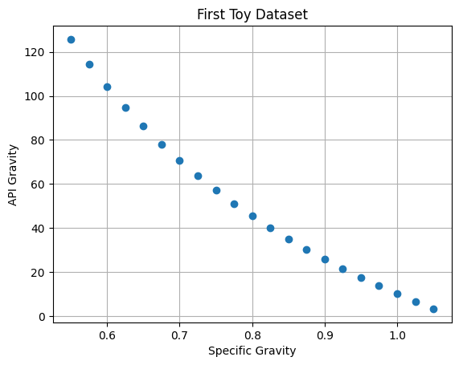
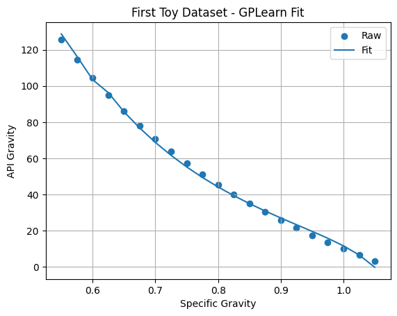

We will continue with two symbolic regression libraries available for Python.
PySR
Since this library runs in Google Colab, but continually dies on a local machine running Jupyter notebook, the first step is to ensure that the library is installed on the current instance of Colab.
# Install libraries!pip install -U pysr
Requirement already satisfied: pysr in /usr/local/lib/python3.11/dist-packages (1.5.8)
Requirement already satisfied: click<9.0.0,>=7.0.0 in /usr/local/lib/python3.11/dist-packages (from pysr) (8.2.1)
Requirement already satisfied: juliacall<0.9.26,>=0.9.24 in /usr/local/lib/python3.11/dist-packages (from pysr) (0.9.25)
Requirement already satisfied: numpy<3.0.0,>=1.13.0 in /usr/local/lib/python3.11/dist-packages (from pysr) (2.0.2)
Requirement already satisfied: pandas<3.0.0,>=0.21.0 in /usr/local/lib/python3.11/dist-packages (from pysr) (2.2.2)
Requirement already satisfied: scikit-learn<2.0.0,>=1.0.0 in /usr/local/lib/python3.11/dist-packages (from pysr) (1.6.1)
Requirement already satisfied: sympy<2.0.0,>=1.0.0 in /usr/local/lib/python3.11/dist-packages (from pysr) (1.13.1)
Requirement already satisfied: typing-extensions<5.0.0,>=4.0.0 in /usr/local/lib/python3.11/dist-packages (from pysr) (4.14.0)
Requirement already satisfied: juliapkg~=0.1.17 in /usr/local/lib/python3.11/dist-packages (from juliacall<0.9.26,>=0.9.24->pysr) (0.1.17)
Requirement already satisfied: python-dateutil>=2.8.2 in /usr/local/lib/python3.11/dist-packages (from pandas<3.0.0,>=0.21.0->pysr) (2.9.0.post0)
Requirement already satisfied: pytz>=2020.1 in /usr/local/lib/python3.11/dist-packages (from pandas<3.0.0,>=0.21.0->pysr) (2025.2)
Requirement already satisfied: tzdata>=2022.7 in /usr/local/lib/python3.11/dist-packages (from pandas<3.0.0,>=0.21.0->pysr) (2025.2)
Requirement already satisfied: scipy>=1.6.0 in /usr/local/lib/python3.11/dist-packages (from scikit-learn<2.0.0,>=1.0.0->pysr) (1.15.3)
Requirement already satisfied: joblib>=1.2.0 in /usr/local/lib/python3.11/dist-packages (from scikit-learn<2.0.0,>=1.0.0->pysr) (1.5.1)
Requirement already satisfied: threadpoolctl>=3.1.0 in /usr/local/lib/python3.11/dist-packages (from scikit-learn<2.0.0,>=1.0.0->pysr) (3.6.0)
Requirement already satisfied: mpmath<1.4,>=1.1.0 in /usr/local/lib/python3.11/dist-packages (from sympy<2.0.0,>=1.0.0->pysr) (1.3.0)
Requirement already satisfied: filelock<4.0,>=3.16 in /usr/local/lib/python3.11/dist-packages (from juliapkg~=0.1.17->juliacall<0.9.26,>=0.9.24->pysr) (3.18.0)
Requirement already satisfied: semver<4.0,>=3.0 in /usr/local/lib/python3.11/dist-packages (from juliapkg~=0.1.17->juliacall<0.9.26,>=0.9.24->pysr) (3.0.4)
Requirement already satisfied: six>=1.5 in /usr/local/lib/python3.11/dist-packages (from python-dateutil>=2.8.2->pandas<3.0.0,>=0.21.0->pysr) (1.17.0)
Next we force the installation of the julia programming language by making a call to the Python side:
# import pysr
Now we will import everything else we need:
# Call librariesimport numpy as npimport pandas as pdimport sympy as symimport matplotlib.pyplot as pltfrom pysr import PySRRegressorimport time
Next, we rebuild our toy dataset and plot it.
# Build Two Copies of Toy Datasetx4=np.arange(start=0.55,stop=1.075,step=0.025)x5=np.arange(start=0.55,stop=1.075,step=0.025)y4=141.5/x4-131.5y5=141.5/x5-131.5# Plotplt.plot(x4,y4,marker="o",linestyle="None")plt.xlabel("Specific Gravity")plt.ylabel("API Gravity")plt.title("First Toy Dataset")plt.grid()plt.show()

Next, we: - Initiate the Symbolic Regressor - Use the regressor to fit the toy dataset - Predict the API gravity values using the Regressor.
The creators of this library chose to use the scikit-learn workflow, so that the terminology is similar to what was used in progress report 1, with the exception of having to reshape the data because we only have one predictor.
We are using defaults for everything except for the random number seed.
/usr/local/lib/python3.11/dist-packages/pysr/sr.py:2811: UserWarning: Note: it looks like you are running in Jupyter. The progress bar will be turned off.
warnings.warn(
/usr/local/lib/python3.11/dist-packages/pysr/sr.py:1873: UserWarning: Note: Setting `random_state` without also setting `deterministic=True` and `parallelism='serial'` will result in non-deterministic searches.
warnings.warn(
[ Info: Started!
On first glance, this equation looks too complicated. However, since it is in sympy format, we can ask for a simplified version:
sym.simplify(myEq04)
-131.50002 + 141.500015/x0
This is very close to our target equation. The big difference between PySR and gramEvol is that the constants calculated from regression instead of being picked from a list.
Just to be clear, here is the sympy version of the target equation:
x, y = sym.symbols('x y')myTarg=sym.sympify(141.5/x-131.5)myTarg
-131.5 + 141.5/x
GPLearn
Next, we are going to repeat the workflow with a similar python library.
# Install libraries!pip install gplearn
Requirement already satisfied: gplearn in /usr/local/lib/python3.11/dist-packages (0.4.2)
Requirement already satisfied: scikit-learn>=1.0.2 in /usr/local/lib/python3.11/dist-packages (from gplearn) (1.6.1)
Requirement already satisfied: joblib>=1.0.0 in /usr/local/lib/python3.11/dist-packages (from gplearn) (1.5.1)
Requirement already satisfied: numpy>=1.19.5 in /usr/local/lib/python3.11/dist-packages (from scikit-learn>=1.0.2->gplearn) (2.0.2)
Requirement already satisfied: scipy>=1.6.0 in /usr/local/lib/python3.11/dist-packages (from scikit-learn>=1.0.2->gplearn) (1.15.3)
Requirement already satisfied: threadpoolctl>=3.1.0 in /usr/local/lib/python3.11/dist-packages (from scikit-learn>=1.0.2->gplearn) (3.6.0)
# Call libraries#import numpy as np#import pandas as pd#import sympy as sym#import matplotlib.pyplot as pltfrom gplearn.genetic import SymbolicRegressor#import time
/usr/local/lib/python3.11/dist-packages/sklearn/base.py:474: FutureWarning: `BaseEstimator._validate_data` is deprecated in 1.6 and will be removed in 1.7. Use `sklearn.utils.validation.validate_data` instead. This function becomes public and is part of the scikit-learn developer API.
warnings.warn(
plt.scatter(x5,y5,label="Raw")plt.plot(x5,y_pred05,label="Fit")plt.xlabel("Specific Gravity")plt.ylabel("API Gravity")plt.title("First Toy Dataset - GPLearn Fit")plt.grid()plt.legend()plt.show()

The fit is almost as good as PySR, and it ran almost twice as fast.
Since we chose nearly default parameters for this library we need to provide a dictionary for it to convert the winning equation to sympy:
converter = {'add': lambda x, y : x + y,'sub': lambda x, y : x - y,'mul': lambda x, y : x*y,'div': lambda x, y : x/y,'sqrt': lambda x : x**0.5,'log': lambda x : log(x),'abs': lambda x : abs(x),'neg': lambda x : -x,'inv': lambda x : 1/x,'max': lambda x, y : max(x, y),'min': lambda x, y : min(x, y),'sin': lambda x : sin(x),'cos': lambda x : cos(x),'pow': lambda x, y : x**y,}myEq05 = sym.sympify(str(myMod05._program), locals=converter)myEq05